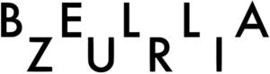

Trade Mark Journal No.2026/007 13 February 2026
WO0000001899266 (3,5,20,21)
Office of origin: European Union Intellectual Property Office (EUIPO)
Date of International Registration:9 May 2025
Date of designation in the UK:
9 May 2025

International priority date claimed: 11 November 2024
(European Union Intellectual Property Office (EUIPO))
(019104108)
- Class 3
- Toiletries; essential oils and aromatic extracts; body cleaning and beauty care preparations; body care cosmetics; cosmetic oils; cosmetic preparations; cosmetic massage creams; cosmetic kits; cleaner for cosmetic brushes; cosmetics; cosmetic preparations for body care; facial preparations; massage oils and lotions; natural cosmetics; natural makeup; perfumery and fragrances; pedicure preparations; body fragrances; body deodorants [perfumery]; body sprays [non-medicated]; eau de parfum; eau de toilette; fragrances; bath preparations; bath and shower gels; bath and shower preparations; body and facial creams [cosmetics]; body and facial gels [cosmetics]; body glitter; body massage oils; body washes; cleaning masks for the face; colour cosmetics for the skin; cosmetics for use on the skin; deodorants and antiperspirants; face and body masks; facial oils; hair preparations and treatments; hair and body wash; glitter in spray form for use as a cosmetics; gel eye patches for cosmetic purposes; make-up; make-up preparations; skin, eye and nail care preparations; soaps and gels; softening cleanser [cosmetic]; preparations for the bath and shower; preparations for the care of the body; preparations for the conditioning of the body; preparations for the shower; shower and bath foam; shower and bath gel; skin care preparations; adhesives for false eyelashes, hair and nails; artificial tanning preparations; auto-tanning creams; base cream; beauty masks; blush pencils; blushers; cheek colors; colour cosmetics for the eyes; colour cosmetics; concealers; concealers for lines and wrinkles; concealers for spots and blemishes; cosmetic creams; cosmetic eye pencils; cosmetic face powders; cosmetic masks; cosmetic pencils; cosmetic powder; cosmetic rouges; cosmetics for eye-brows; cosmetics for eyelashes; cosmetics for suntanning; cosmetics in the form of eye shadow; cosmetics in the form of gels; cosmetics in the form of rouge; cream foundation; creamy foundation; creamy rouge; decorative cosmetics; eye concealers; eye cosmetics; eye liner; eye make-up; eye make-up remover; eye make-up removers; eye pencils; eye shadows; eye sticks; eyebrow colors; eyebrow cosmetics; eyebrow gel; eyebrow mascara; eyebrow pencils; eyebrow powder; eyeliner; eyeshadow palettes; face and body glitter; face blusher; face glitter; face powder; facial concealer; facial makeup; foundation creams; foundation make-up; foundations; glitter for cosmetic purposes; liners [cosmetics] for the eyes; lip coatings [cosmetic]; lip cosmetics; lip gloss palettes; lip glosses; lip liners; lip makeup; lip pencils; lip polisher; lip rouge; lipstick cases; lipsticks; liquid eyeliners; liquid foundation; liquid rouges; long lash mascaras; loose face powder; make-up base; make-up for the face and body; make-up foundations; make-up powder; pores tightening mask packs used as cosmetics make-up; cosmetic preparations for the face and body; make-up primers; make-up removers; make-up removing gels; make-up removing lotions; make-up removing milks; make-up removing preparations; mascaras; masks (beauty -); mattifying gel cream; self tanning creams [cosmetic]; self tanning lotions [cosmetic]; skin foundation; skin make-up; sun bronzers; sun creams; under eye correctors; acne cleansers, cosmetic; bars of soap; bath and shower gels, not for medical purposes; cosmetic soaps; exfoliating scrubs for the feet; exfoliating scrubs for the hands; facial soaps; gels for cosmetic use; hand cleaning preparations; hand scrubs; hand soap; liquid bath soap; shower creams; soaps; skin soap; soaps for body care; aromatic oils for the bath; bath and shower foam; bath creams; bath foams; bath gels; bath oils; cosmetic bath salts; cosmetic preparations for baths; body sprays; body deodorants; deodorants for body care; after-sun creams; after-sun lotions; after-sun milks; after sun moisturisers; age spot reducing creams; anti-ageing creams; anti-freckle creams; anti-wrinkle creams; aromatherapy creams; artificial eyelashes; artificial fingernails; balms other than for medical purposes; bath salts; bathing lotions; beauty creams for body care; beauty masks for hands; beauty serums with anti-ageing properties; beauty tonics for application to the body; beauty tonics for application to the face; body butters; body creams; body emulsions; body firming creams; body lotions; body mask creams; body mask powder; body moisturisers; body oils; body scrubs; cleaning foam; cleansing balm; cleansing creams; cleansing masks; cleansing milks for skin care; cleansing products for the eyes; cosmetic facial masks; cosmetic eye gels; cosmetic creams for dry skin; cosmetic nail care preparations; cosmetic nourishing creams; cosmetic preparations against sunburn; cosmetic preparations for skin care; cosmetic preparations for dry skin during pregnancy; cosmetic preparations for skin renewal; cosmetic preparations for nail drying; cosmetic products for the shower; cosmetics in the form of lotions; cosmetics in the form of milks; day creams; essences for skin care; exfoliants for the care of the skin; exfoliants for the cleansing of the skin; exfoliating body scrub; eye concealer serum; eye creams; eye gels; eyebrows [false]; eyelashes; face and body creams; face and body lotions; face gels; face masks; face scrubs (non-medicated -); facial beauty masks; facial cleansers; facial lotions [cosmetic]; facial masks [cosmetic]; facial moisturizers; facial scrubs; facial washes; foot masks for skin care; foot powder [non-medicated]; gel eye masks; gel nail removers; hand and body butter; hand creams; hand lotions; hand masks for skin care; lip balms; lip care preparations; lip conditioners; lip protectors [cosmetic]; lip cream; lotions for face and body care; lotions for strengthening the nails; lotions for the skin; moisturizers; nail hardeners; nail polish; nail polish base coat; nail polish removers; nail glitter; nail gel; nail primer [cosmetics]; nail repair preparations; night creams; non-medicated cleansing creams; oils for the skin; perfumed creams; pomades for lips; preparations for reinforcing the nails; scented body lotions; scented body creams; skin care cosmetics; skin care lotions [cosmetic]; skin cleansers; skin cleansing cream; skin cleansing lotion; skin conditioners; skin creams; skin fresheners; skin lotions; skin moisturizers; skin masks; skin relief serum [cosmetic]; skin toners; skin tonics [non-medicated]; skin whitening creams; skincare cosmetics; smoothing emulsions for the skin; sun-block lotions; sun care preparations; sun-tanning lotions; tanning preparations; beauty preparations for the hair; conditioners for use on the hair; conditioning balsam; conditioning creams; conditioning preparations for the hair; cosmetic hair care preparations; cosmetic preparations for the hair and scalp; hair balms; hair bleaches; hair care masks; hair care lotions; hair care creams [for cosmetic use]; hair care serums; hair conditioner bars; hair creams; hair liquids; hair lotions; hair mascara; hair masks; hair moisturising conditioners; hair moisturizers; hair mousses; hair oils; hair protection creams; hair protection gels; hair protection lotions; hair shampoos; hair sprays; hair styling gels; hair styling lotions; hair styling preparations; oil baths for hair care; shampoos; shampoo-conditioners; styling gels; styling lotions; waterless shampoos; after-shave balms; after-shave lotions; shaving balms; household fragrances; air fragrance preparations; room fragrances; pre-moistened cosmetic wipes; moist wipes for cosmetic use.
- Class 5
- Dietary supplements and dietetic preparations; pharmaceutical products and preparations; pharmaceuticals; pharmaceutical creams; pharmaceutical lip salves; pharmaceutical skin lotions; moisturing creams [pharmaceutical]; dermatological pharmaceutical substances; moisturising body lotion [pharmaceutical]; lotions for pharmaceutical purposes; pharmaceutical preparation for skin care; sunburn preparations for pharmaceutical purposes.
- Class 20
- Racks for cosmetics.
- Class 21
- Cosmetic, hygiene and beauty care utensils, namely make-up brushes, cosmetic brushes, make-up sponges, make-up removal wipes [textile material] other than impregnated with cosmetics, cosmetic applicators; facial cleansing brushes; make-up brushes; make-up removing appliances; containers for cosmetics; cosmetic brushes; holders for cosmetics.
IKA-Werke GmbH & Co. KG
Representative: MAUCHER JENKINS Patentanwälte & Rechtsanwälte, Urachstr. 23, 79102 Freiburg im Breisgau, GERMANY